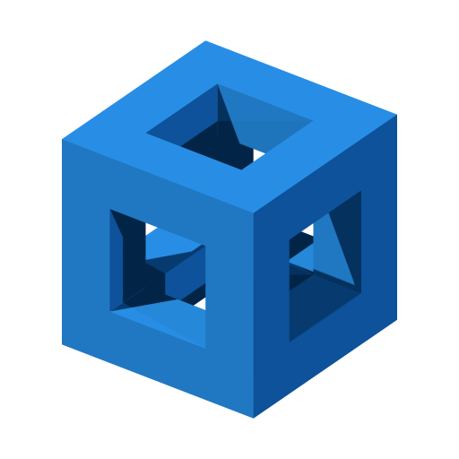

A blue cube with three intersecting square tunnels. Modeled and compiled in OpenSCAD.js; rendered locally with Three.js. An independent project mark, not an OpenSCAD affiliation badge.

SCAD source · 512px transparent PNG
· Regenerate with npm run build:icon.